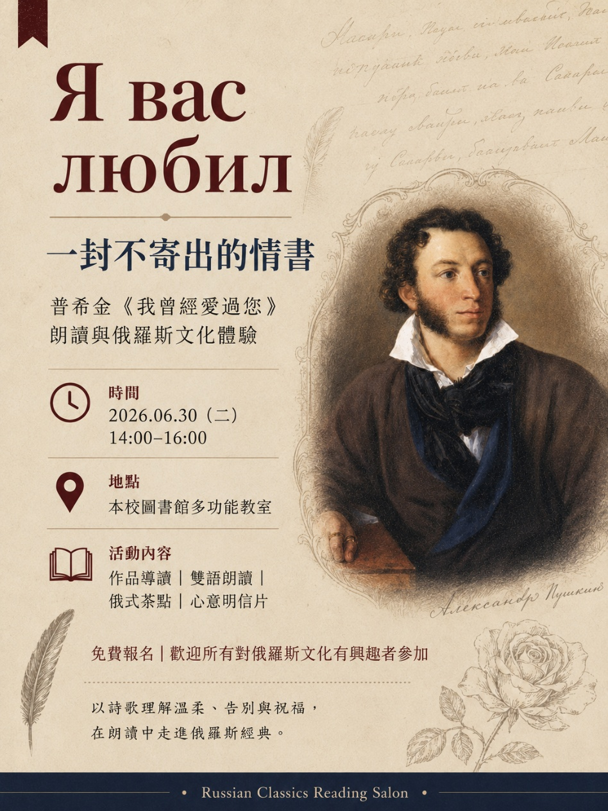

作品導讀
認識普希金的生平、創作時代，以及詩作背後的情感語境。
普希金 × 詩歌朗讀 × 俄羅斯文化體驗
Я вас любил
普希金〈我曾經愛過您〉
朗讀與俄羅斯文化體驗
從一首詩出發，在聲音、茶香與書寫之間， 理解愛情裡的克制、成全與真摯祝福。

2026 年 6 月 30 日，與我們一起走進普希金的詩。
About the salon
普希金的〈我曾經愛過您〉篇幅短小，卻以真誠而節制的語氣， 寫出愛情中難得的尊重與成全。
這場兩小時的閱讀沙龍，將詩作轉化成可聽、可讀、可品味、 也可以親手寫下的文化體驗。即使不懂俄文，也能從聲音與情感進入作品。
不是遺忘，也不是打擾；而是把未說出口的心意，留成一份安靜的祝福。
Four experiences
不需要文學背景，只要帶著一點好奇心前來。
認識普希金的生平、創作時代，以及詩作背後的情感語境。
聆聽中俄雙語示範，再分組練習停頓、語氣與情感層次。
在紅茶與簡易點心的香氣裡，感受俄羅斯閱讀沙龍的日常氛圍。
寫下一句想祝福、卻不願打擾對方的話，留給心裡的某個人。
Two-hour journey
從理解作品開始，最後將感受化成一句自己的話。
從詩人的生命經驗與俄羅斯文學脈絡，理解作品誕生的時代。
比較兩種語言的節奏與聲音，聽見詩中克制而深長的情感。
練習語氣與停頓，在交流中找到最貼近自己的朗讀方式。
把未曾說出口的祝福寫下，為這場閱讀留下專屬的句點。
Alexander Pushkin · 1829
Я вас любил
這首抒情詩約寫於 1829 年，並於 1830 年發表。 詩中的愛並不以佔有作為終點，而是在不願打擾對方的克制裡， 轉化成溫柔而真誠的祝願。
活動不預設標準解讀。我們將透過朗讀，細聽語句中的停頓與轉折， 再從自己的生命經驗出發，理解何謂告別、尊重與成全。
Join the salon
免費參加，歡迎所有對俄羅斯文學與文化有興趣的人。
現場備有朗讀文本、書寫材料與簡易茶點。請準時入場，並自備一顆願意慢下來讀詩的心。
Further reading